Transformers represent one of the most significant breakthroughs in modern artificial intelligence. Unlike traditional sequence models such as Recurrent Neural Networks (RNNs) and Long Short-Term Memory networks (LSTMs), transformers rely entirely on attention mechanisms to process input data. This architectural shift enables parallel computation, improved handling of long-range dependencies, and significantly better scalability. Transformers form the backbone of modern AI systems including large language models, recommendation systems, and multimodal architectures. Understanding transformers requires a combination of mathematical intuition, architectural clarity, and practical implementation knowledge, all of which are covered in this engineering handbook.
Self-attention is the core mechanism behind transformer models that allows each word in a sentence to understand its relationship with every other word. Unlike older models like RNNs that process words one by one, self-attention looks at the entire sentence at once. It assigns importance scores to words based on how relevant they are to each other. For example, in the sentence "The cat sat on the mat", the word "cat" is more related to "sat" than "mat". Self-attention captures such relationships efficiently. This ability to model global dependencies makes transformers powerful and scalable.
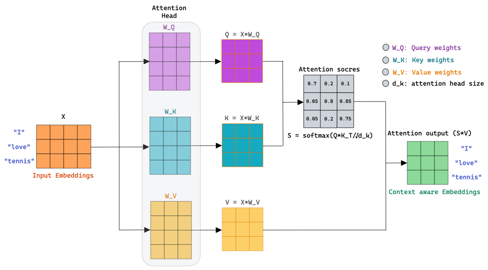
Attention(Q,K,V) = softmax(QKᵀ / √d_k) V
import torch
import torch.nn.functional as F
def attention(Q, K, V):
d_k = Q.size(-1)
scores = torch.matmul(Q, K.transpose(-2, -1)) / (d_k ** 0.5)
weights = F.softmax(scores, dim=-1)
return torch.matmul(weights, V)
Q = torch.rand(1,3,4)
K = torch.rand(1,3,4)
V = torch.rand(1,3,4)
print(attention(Q,K,V))
Multi-head attention extends self-attention by allowing the model to focus on multiple relationships at the same time. Instead of computing a single attention score, the model splits the input into multiple parts called heads. Each head learns a different type of relationship, such as grammar, meaning, or position. These multiple perspectives are then combined to produce a richer representation. This makes the model more powerful and expressive. Multi-head attention is one of the key reasons transformers outperform traditional models in complex NLP tasks.
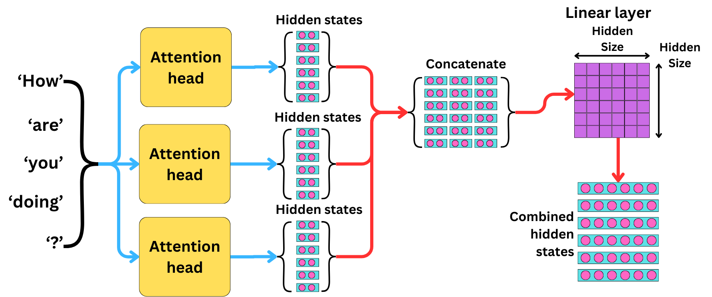
MultiHead(Q,K,V) = Concat(head₁,...,headₕ)Wᵒ
import torch.nn as nn
class MultiHeadAttention(nn.Module):
def __init__(self, d_model, heads):
super().__init__()
self.q = nn.Linear(d_model, d_model)
self.k = nn.Linear(d_model, d_model)
self.v = nn.Linear(d_model, d_model)
def forward(self, x):
Q = self.q(x)
K = self.k(x)
V = self.v(x)
return Q @ K.transpose(-2,-1) @ V
Transformers process all words at the same time, which means they do not inherently understand the order of words in a sentence. However, word order is critical for meaning. Positional encoding solves this problem by adding information about the position of each word to its embedding. This allows the model to understand sequences while still benefiting from parallel computation. The original transformer uses sine and cosine functions to generate position values, ensuring smooth transitions across positions. This helps the model generalize to longer sequences and maintain structure in language.
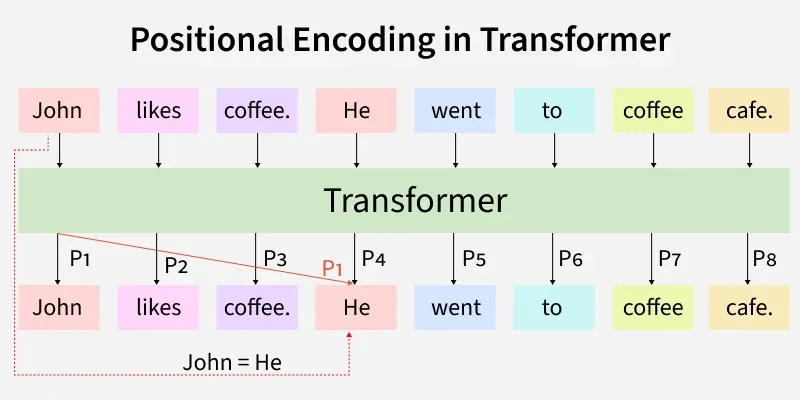
PE(pos,2i)=sin(pos/10000^(2i/d)) PE(pos,2i+1)=cos(pos/10000^(2i/d))
import numpy as np
def positional_encoding(pos, d_model):
PE = np.zeros((pos, d_model))
for i in range(pos):
for j in range(0, d_model, 2):
PE[i, j] = np.sin(i / (10000 ** ((2*j)/d_model)))
PE[i, j+1] = np.cos(i / (10000 ** ((2*j)/d_model)))
return PE
print(positional_encoding(5,6))
GPT is a decoder-only transformer model designed for generating text by predicting the next word in a sequence. Unlike traditional models, GPT learns language patterns by training on massive datasets and using a simple objective: predict the next token given previous tokens. It uses causal masking to ensure that future words are not visible during training. This allows GPT to generate coherent and context-aware text. Because of its scalability and simplicity, GPT has become one of the most powerful architectures in modern AI, powering applications like chatbots, code generation, and content creation.
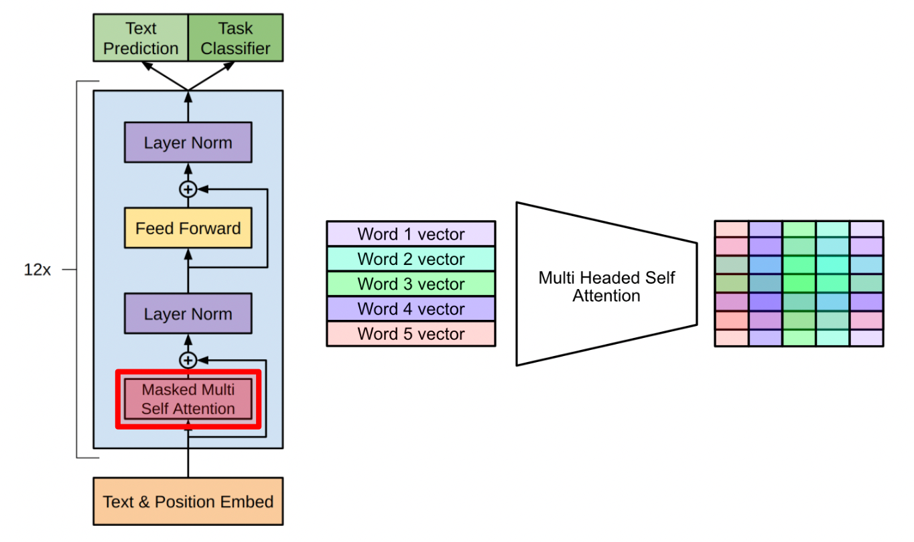
P(w₁,...,wₙ) = ∏ P(w_t | w₁,...,w_{t-1})
from transformers import GPT2Tokenizer, GPT2LMHeadModel
tokenizer = GPT2Tokenizer.from_pretrained("gpt2")
model = GPT2LMHeadModel.from_pretrained("gpt2")
inputs = tokenizer("AI will", return_tensors="pt")
outputs = model.generate(**inputs, max_length=20)
print(tokenizer.decode(outputs[0]))
The decoder is a core component of transformer models responsible for generating output sequences. It operates in an autoregressive manner, meaning it generates one token at a time based on previously generated tokens. The decoder consists of masked self-attention, encoder-decoder attention (in seq2seq models), and feedforward layers. Masked attention ensures that the model cannot see future tokens, preserving causality. This design allows the decoder to generate coherent and logically consistent sequences. Decoder-only architectures like GPT rely entirely on this structure.
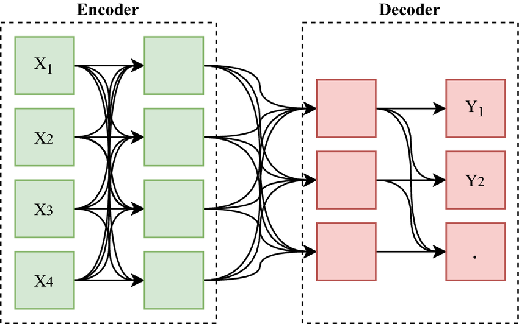
Decoder = MaskedAttention + CrossAttention + FeedForward
import torch
def causal_mask(size):
return torch.tril(torch.ones(size, size))
print(causal_mask(5))
BERT is an encoder-only transformer model designed for understanding text rather than generating it. Unlike GPT, which reads text left-to-right, BERT reads text in both directions simultaneously, allowing it to capture deep contextual relationships. It is trained using Masked Language Modeling (MLM), where some words are hidden and the model learns to predict them. This bidirectional learning makes BERT highly effective for tasks like classification, question answering, and named entity recognition. It revolutionized NLP by significantly improving performance across multiple benchmarks.
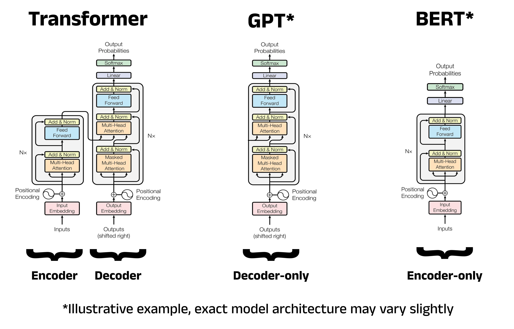
L = - Σ log P(w_i | context_without_w_i)
from transformers import BertTokenizer, BertModel
tokenizer = BertTokenizer.from_pretrained("bert-base-uncased")
model = BertModel.from_pretrained("bert-base-uncased")
inputs = tokenizer("Transformers are powerful", return_tensors="pt")
outputs = model(**inputs)
print(outputs.last_hidden_state.shape)
T5 (Text-to-Text Transfer Transformer) is a powerful transformer model that treats every NLP task as a text-to-text problem. Instead of designing different architectures for tasks like translation, summarization, or classification, T5 converts all inputs and outputs into text format. For example, classification becomes "input text → label text". This unified approach simplifies model design and allows a single model to handle multiple tasks efficiently. T5 uses both encoder and decoder components, making it highly flexible. It is especially useful in modern AI systems where prompt-based learning and multi-task capabilities are required.
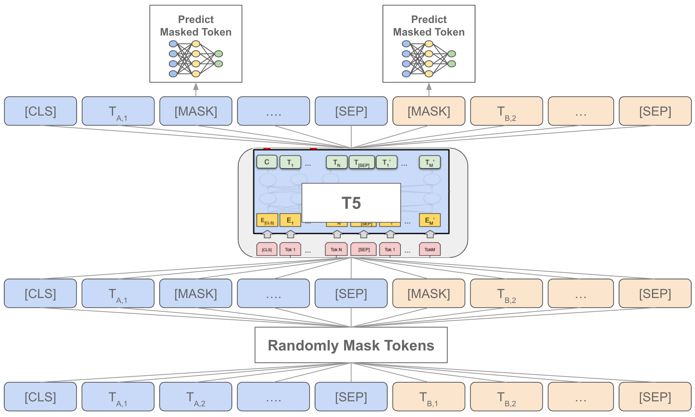
y = f(x; θ)
from transformers import T5Tokenizer, T5ForConditionalGeneration
tokenizer = T5Tokenizer.from_pretrained("t5-small")
model = T5ForConditionalGeneration.from_pretrained("t5-small")
input_text = "summarize: AI is transforming industries rapidly"
inputs = tokenizer(input_text, return_tensors="pt")
outputs = model.generate(**inputs)
print(tokenizer.decode(outputs[0]))
Reinforcement Learning from Human Feedback (RLHF) is a technique used to align language models with human expectations. While models trained on large datasets can generate fluent text, they may produce incorrect, harmful, or irrelevant responses. RLHF introduces a feedback loop where human evaluators rank model outputs based on quality. A reward model is trained on this feedback, and the main model is optimized to maximize this reward using reinforcement learning techniques. This process helps models become more helpful, safe, and aligned with user intent. RLHF is a key component behind systems like ChatGPT.
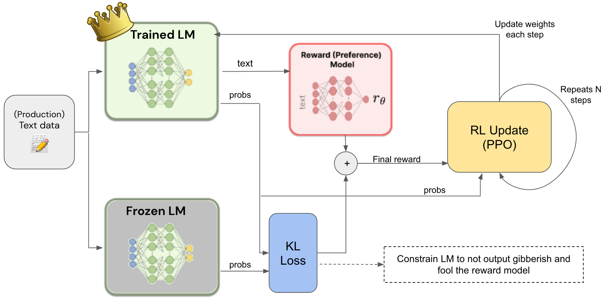
maximize E[R(x)]
# Conceptual RLHF loop
for input_text in dataset:
output = model(input_text)
reward = reward_model(output)
loss = -reward
loss.backward()
Scaling laws describe how the performance of machine learning models improves as we increase model size, dataset size, and computational power. Research has shown that larger models trained on more data tend to perform better in a predictable way. These improvements follow mathematical relationships known as power laws. Scaling laws help engineers understand how much improvement they can expect when increasing resources. This has driven the development of massive models like GPT-4. However, scaling also introduces challenges such as higher cost, energy consumption, and diminishing returns at extreme sizes.
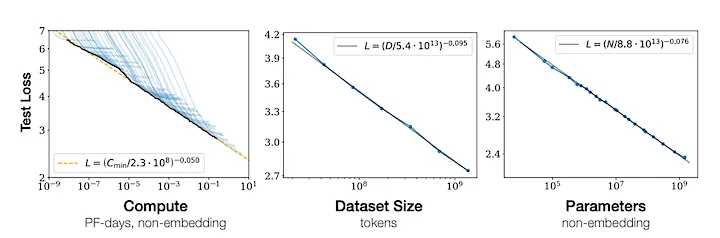
Loss ∝ N^(-α)
import numpy as np
import matplotlib.pyplot as plt
N = np.array([1e3,1e4,1e5,1e6])
loss = N ** (-0.1)
plt.plot(N, loss)
plt.xscale("log")
plt.title("Scaling Law")
plt.show()
Standard self-attention in transformers has a quadratic time and memory complexity with respect to sequence length, making it inefficient for long inputs such as documents or code. To solve this, researchers developed attention variants that reduce computation while preserving performance. These include sparse attention, linear attention, and FlashAttention. Sparse attention limits interactions to selected tokens, linear attention approximates attention to achieve linear complexity, and FlashAttention optimizes memory access for faster GPU execution. These techniques are essential for scaling transformers to handle long sequences efficiently.
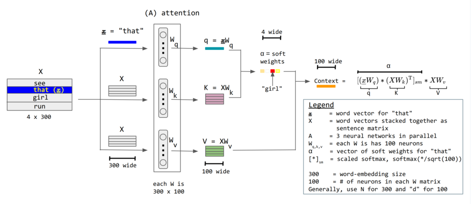
Standard Attention = O(n²) Linear Attention = O(n)
# Conceptual linear attention import torch Q = torch.rand(1,100,64) K = torch.rand(1,100,64) K_sum = K.sum(dim=1) output = Q @ K_sum.unsqueeze(-1) print(output.shape)
Mixture of Experts (MoE) is a scalable neural network architecture that increases model capacity without increasing computation proportionally. Instead of activating the entire model for every input, MoE uses a gating network to select a subset of expert networks dynamically. Each expert specializes in different patterns, such as language, reasoning, or coding. This allows the model to scale to billions or even trillions of parameters efficiently. MoE is widely used in large-scale systems like Google’s Switch Transformer.
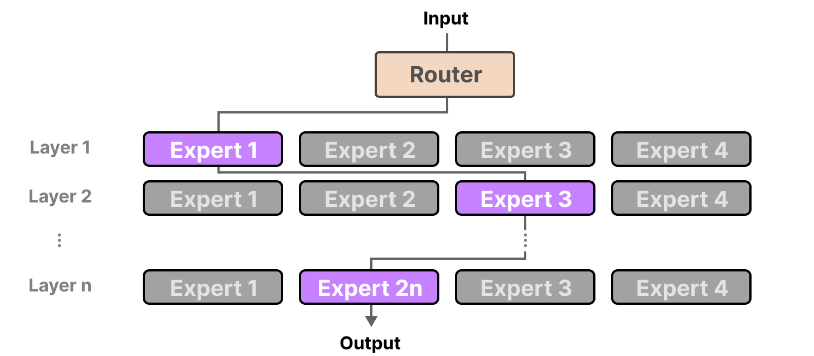
Output = Σ gate_i(x) * expert_i(x)
import torch # Example gating x = torch.rand(3) gate = torch.softmax(x, dim=0) experts = [torch.rand(3) for _ in range(3)] output = sum(gate[i] * experts[i] for i in range(3)) print(output)
Training transformer models involves optimizing millions or billions of parameters using large datasets and powerful hardware. The goal is to minimize a loss function, typically cross-entropy, using gradient descent. Due to the scale of these models, training requires advanced techniques such as learning rate scheduling, gradient clipping, and mixed precision training. Distributed training across multiple GPUs or TPUs is often necessary. Proper training ensures stability, convergence, and high performance in downstream tasks.
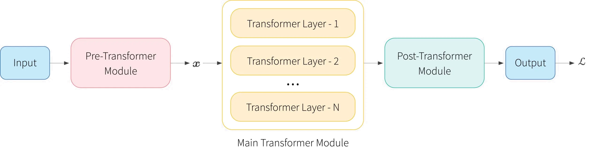
θ = θ - η ∇L(θ)
import torch optimizer = torch.optim.Adam(model.parameters(), lr=1e-4) loss.backward() optimizer.step() optimizer.zero_grad()
Inference optimization focuses on making trained models faster and more efficient during deployment. Since large language models are computationally expensive, techniques such as quantization, KV caching, batching, and hardware acceleration are used to reduce latency and cost. KV caching stores previous computations in autoregressive models, avoiding redundant calculations. Quantization reduces model precision to decrease memory usage. These optimizations are critical for real-time applications like chatbots and APIs.
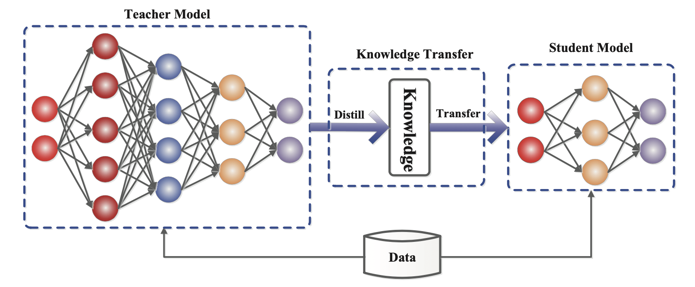
y_t = f(y_{t-1}, cache)
with torch.no_grad():
output = model(input_ids)
Transformers are widely used across industries, powering applications such as chatbots, recommendation systems, code generation, and multimodal AI systems. Their ability to model complex relationships makes them suitable for a wide range of tasks.
The future of transformers lies in efficiency, multimodality, and autonomous intelligence. Research is focused on reducing computational costs, improving reasoning capabilities, and integrating multiple data modalities such as text, images, and audio.